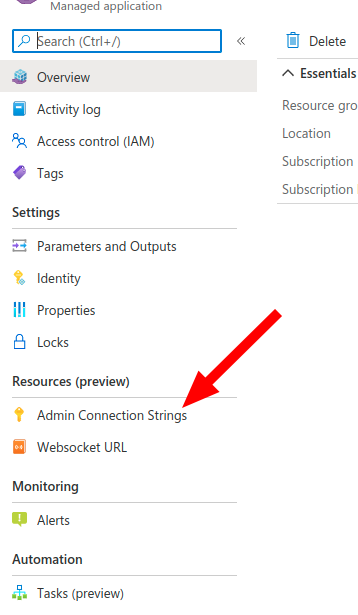

REST API Reference¶
Ux4iot exposes a REST API that you can use in your security backend and in your own apps to manage subscription workflow. These APIs are used by ux4iot-react hooks to communicate with security backends and ux4iot.
We recommend using the ux4iot-admin-node library when using the REST API. At the moment, we only support typescript.
The only time you will need to directly use the ux4iot REST api is in your security backend to forward grants and in your DevOps to ensure the ux4iot is running correctly. All other resources are mainly used by the ux4iot-react library.
In order to use the REST API you will need the Shared-Access-Key of the Ux4iot. You can find it as part of the ux4iot connection string. Get the connection string by using the left sidebar in your ux4iot instance.

There are api resources to perform actions against the IoTHub. They are only available if you use an IoTHub service connection string in your ux4iot deployment parameters.
Common¶
Get the server version of ux4iot¶
GET https://ux4iot-xyz.westeurope.azurecontainer.io/version
This resource can always be requested without any credentials.
Get the current status of ux4iot¶
GET https://ux4iot-xyz.westeurope.azurecontainer.io/status
Helpful when you want to ensure the correct deployment of ux4iot.
Set the log level of ux4iot¶
PUT https://ux4iot-xyz.westeurope.azurecontainer.io/logLevel/:level
Path Parameters¶
| Name | Type | Description |
|---|---|---|
| level==*== | String | 'error' | 'warn' | 'info' | 'verbose' | 'debug' |
Headers¶
| Name | Type | Description |
|---|---|---|
| Shared-Access-Key==*== | String |
Sessions¶
Opens a new session in ux4iot¶
POST https://ux4iot-xyz.westeurope.azurecontainer.io/session
Delete a session by ID¶
DELETE https://ux4iot-xyz.westeurope.azurecontainer.io/sessions/:sessionId
Path Parameters¶
| Name | Type | Description |
|---|---|---|
| sessionId==*== | String | The ID of the session to delete |
Headers¶
| Name | Type | Description |
|---|---|---|
| Shared-Access-Key==*== | String | The shared-access-key of the the connection string of your ux4iot instance |
Delete all sessions¶
DELETE https://ux4iot-xyz.westeurope.azurecontainer.io/sessions
Headers¶
| Name | Type | Description |
|---|---|---|
| Shared-Access-Key==*== | String | The shared-access-key of the the connection string of your ux4iot instance |
Grants¶
Grants authorize a session to subscribe to resources, patch desired properties and execute direct methods.
GrantRequest Types¶
GrantRequest types only differ in the "type" property. For Telemetry and DirectMethods you can add an additional property to restrict specific telemetry keys or direct methods respectively.
type DeviceTwinGrantRequest = { sessionId: string; deviceId: string; type: 'deviceTwin'; }
type ConnectionStateGrantRequest = { sessionId: string; deviceId: string; type: 'connectionState'; }
type D2CMessageGrantRequest = { sessionId: string; deviceId: string; type: 'd2cMessages'; }
type DesiredPropertiesGrantRequest = { sessionId: string; deviceId: string; type: 'desiredProperties'; }
type TelemetryGrantRequest = {
sessionId: string;
deviceId: string;
type: 'telemetry';
telemetryKey: string | null;
}
type DirectMethodGrantRequest = {
sessionId: string;
deviceId: string;
type: 'telemetry';
directMethodName: string | null;
}
Forward a grant¶
PUT https://ux4iot-xyz.westeurope.azurecontainer.io/grants
Add a grant for the sessionId contained in the grant.
Headers¶
| Name | Type | Description |
|---|---|---|
| Shared-Access-Key==*== | string | The Shared Access Key used for authentication |
Request Body¶
| Name | Type | Description |
|---|---|---|
| telemetryKey | string | null | available on type: "telemetry" used to grant a specific telemetryKey. use null for all telemetry of the device |
| deviceId==*== | string | The IoT Hub device ID |
| sessionId==*== | string | The sessionId for which the grant is requested |
| type==*== | string | 'telemetry' | 'deviceTwin' | 'connectionState' | 'desiredProperties' | 'directMethod' | 'd2cMessages' |
| directMethodName | string | available on type: 'directMethod' used to grant a specific directMethod. use null for all direct methods of the device |
Revoke a grant¶
DELETE https://ux4iot-xyz.westeurope.azurecontainer.io/grants
Revoke the grant given
Headers¶
| Name | Type | Description |
|---|---|---|
| Shared-Access-Key==*== | string | The Shared Access Key used for authentication |
Request Body¶
| Name | Type | Description |
|---|---|---|
| deviceId==*== | string | The device for which to revoke the grant |
| type==*== | string | The grant type to revoke |
| sessionId==*== | string | The session ID that the grant belongs to |
| telemetryKey | string | null | available on type: "telemetry" used to grant a specific telemetryKey. use null for all telemetry of the device |
| directMethodName | string | null | available on type: 'directMethod' used to grant a specific directMethod. use null for all direct methods of the device |
Subscriptions¶
A subscription request lets a session subscribe to live data from the EventHub. Similar to GrantRequests, there are multiple SubscriptionRequest types:
export type TelemetrySubscriptionRequest = {
sessionId: string;
deviceId: string;
type: 'telemetry';
telemetryKey: string | null;
};
export type DeviceTwinSubscriptionRequest = { sessionId: string; deviceId: string; type: 'deviceTwin'; };
export type ConnectionStateSubscriptionRequest = { sessionId: string; deviceId: string; type: 'connectionState'; };
export type D2CMessageSubscriptionRequest = { sessionId: string; deviceId: string; type: 'd2cMessages'; };
Subscribe to live data¶
PUT https://ux4iot-xyz.westeurope.azurecontainer.io/subscription
Request Body¶
| Name | Type | Description |
|---|---|---|
| sessionId==*== | string | |
| deviceId==*== | string | |
| type==*== | string | one of 'telemetry' | 'deviceTwin' | 'connectionState' | 'd2cMessages' |
| telemetryKey | string | null | Only available on type: "telemetry". use null for subscribing to all telemetry of a device |
Unsubscribe from live data¶
DELETE https://ux4iot-xyz.westeurope.azurecontainer.io/subscription
Request Body¶
| Name | Type | Description |
|---|---|---|
| sessionId==*== | string | |
| deviceId==*== | string | |
| type==*== | string | one of 'telemetry' | 'deviceTwin' | 'connectionState' | 'd2cMessages' |
| telemetryKey | string | null | Only available on type: "telemetry". use null for subscribing to all telemetry of a device |
Bulk subscribe to multiple devices¶
PUT https://ux4iot-xyz.westeurope.azurecontainer.io/subscriptions
You have to send a list of subscription requests as body. If this list contains an invalid subscription request, the entire request will fail without applying any subscription requests. If you have a missing grant for some of the subscription requests, they will be skipped.
The response will contain a body that gives you the list of applied subscription requests. If you have valid grants for all subscription requests, the response body will match your request body.
Bulk unsubscribe from multiple devices¶
DELETE https://ux4iot-xyz.westeurope.azurecontainer.io/subscriptions
You have to send a list of subscription requests as body. If this list contains an invalid subscription request, the entire request will fail without removing any subscription requests. If you have a missing grant for some of the subscription requests, they will be skipped.
The response will contain a body that gives you the list of applied subscription requests. If you have valid grants for all subscription requests, the response body will match your request body.
Last Values¶
Read last telemetry values for device¶
GET https://ux4iot-xyz.westeurope.azurecontainer.io/lastValue/:deviceId/:telemetryKey?
This endpoint both supports requests with sessionId header or requests with Shared-Access-Key header.
If you use a sessionId, then it will be check whether a grant for the device telemetry exists before the last values are returned.
If you use a Shared-Access-Key, then any last value will be returned, without grants being checked.
Path Parameters¶
| Name | Type | Description |
|---|---|---|
| deviceId==*== | String | |
| telemetryKey | String | if omitted, returns all last values of the device |
// telemetryKey provided
{
deviceId: string;
data: {
[telemetryKey]: any;
}
timestamp: string; // iso date
}
// telemetryKey not provided
{
deviceId: string;
data: {
[telemetryKey]: {
value: any;
timestamp: string; // iso date
}
}
timestamp: '';
}
Remove all last values for a device¶
DELETE https://ux4iot-xyz.westeurope.azurecontainer.io/lastValue/:deviceId
This endpoint both supports requests with sessionId header or requests with Shared-Access-Key header.
If you use a sessionId, then it will be check whether a grant for the device telemetry exists before the last values are returned.
If you use a Shared-Access-Key, then any last value will be returned, without grants being checked.
Path Parameters¶
| Name | Type | Description |
|---|---|---|
| deviceId==*== | String | |
| telemetryKey | String | if omitted, returns all last values of the device |
// telemetryKey provided
{
deviceId: string;
data: {
[telemetryKey]: any;
}
timestamp: string; // iso date
}
// telemetryKey not provided
{
deviceId: string;
data: {
[telemetryKey]: {
value: any;
timestamp: string; // iso date
}
}
timestamp: '';
}
Read last device twin for device¶
GET https://ux4iot-xyz.westeurope.azurecontainer.io/deviceTwin/:deviceId
Returns the last device twin for a device, if you have provided a IoTHub service connection string in your ux4iot deployment parameters.
Path Parameters¶
| Name | Type | Description |
|---|---|---|
| deviceId==*== | string |
{
deviceId,
data: DeviceTwin
timestamp: string // iso date
}
Read last connection state for device¶
GET https://ux4iot-xyz.westeurope.azurecontainer.io/connectionState/:deviceId
Returns the last connection state for a device.
If you have provided a IoTHub service connection string in your ux4iot deployment parameters and if there is no connection state found in the ux4iot's cache, ux4iot will also check the IoTHub for the connected property in the device twin for a last connection state.
Read more about the connection state concept here
Path Parameters¶
| Name | Type | Description |
|---|---|---|
| deviceId==*== | string |
{
deviceId,
data: DeviceTwin
timestamp: string // iso date
}
IoTHub Methods¶
These api resources are only available if you provided an IoTHub service connection string in your ux4iot deployment parameters.
Direct Method¶
We use the IoTHub parameters that you will need to send in the direct method request:
type DirectMethodRequestBody = {
deviceId: string;
methodParams: {
// The name of the method to call on the device.
methodName: string;
// The method payload that will be sent to the device.
payload?: any;
// The maximum time a device should take to respond to the method.
responseTimeoutInSeconds?: number;
// The maximum time the service should try to connect to the device before declaring the device is unreachable.
connectTimeoutInSeconds?: number;
}
}
When authorized and grants are set, ux4iot will send a request to IoTHub to execute the requested direct method. We forward the HTTP response codes from the IoTHub.
Executes a direct method on an IoTHub device¶
POST https://ux4iot-xyz.westeurope.azurecontainer.io/directMethod
Provide a body containing the following
Request Body¶
| Name | Type | Description |
|---|---|---|
| deviceId==*== | String | |
| methodParams==*== | DeviceMethodParams |
{
"status" : 201,
"payload" : {...}
}
Patch Desired Properties¶
Apply a patch to desired properties of a device using the following request body:
type PatchDesiredPropertiesRequestBody = {
deviceId: string;
desiredPropertyPatch: Record<string, any>
}
Executes a patch of desired properties on a device twin¶
PATCH https://ux4iot-xyz.westeurope.azurecontainer.io/deviceTwinDesiredProperties
Request Body¶
| Name | Type | Description |
|---|---|---|
| deviceId==*== | String | |
| desiredPropertyPatch==*== | Record\ |